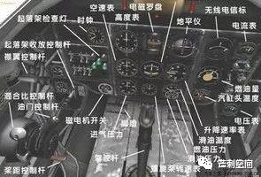
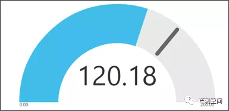
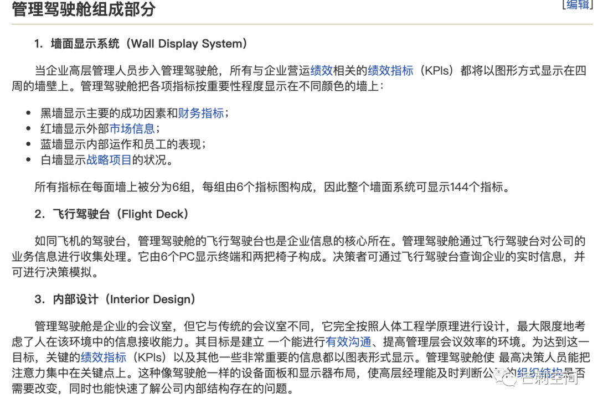
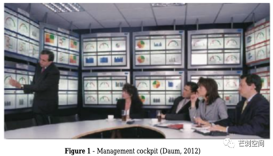
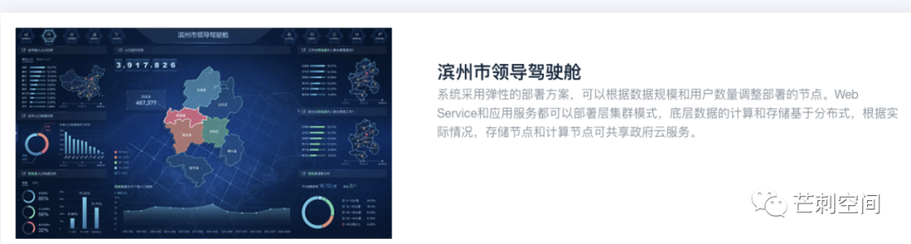

管理驾驶舱？这个名词是不是很莫名其妙。管理层老司机爱开车所以需要驾驶舱？肯定不是。
又要追溯一个商业名词的历史，希望能有所值。Let’s go!
驾驶舱
驾驶舱 cockpit，一般指飞行员控制飞机的座舱，舱内安装有各类飞行仪表和飞行控制系统。词源上也很有趣，cock 公鸡（今夜不开车），pit 地面上凹陷处也就是坑，cockpit 斗鸡场或者是飞机驾驶舱。也算形象，飞机头上一个洞，请回忆早期飞机的样子。
驾驶舱里重要的自然就有飞行仪表了。看一张机械仪表时代的驾驶舱，对反应快的同学而言可能这篇文章就可以结束了。

古早味 BI 软件里都有这种看得让人裂开的可视化图：仪表图，可能算是唯一的拟物风可视化图表。（下图来自 PowerBI）

此处略微岔开，数控技术开始取代机械时，飞机驾驶舱仪表盘（sorry for 直接引入这个词汇）就开始采用数显仪表了。数显仪表相比机械仪表更加直观明确，测温枪 vs 水银温度计，同时消灭了机舱里的一个岗位：飞航工程师。不过也没有完全消灭，只是不是每一架飞机上都需要一名了。
A380 驾驶舱：
管理驾驶舱
听起来和 BI 差不了多少，也是一种决策支持系统 DSS。所以最后这个商业名词也就成了 BI 的一种“应用”。我实在是疏于考证，但我有信心说管理驾驶舱和BI这两个概念都比我这个90后老。
既然是需要用指标来监控企业运转状态，除了古老的财务指标外，应该就是 平衡计分卡或者 KPI 了吧。
至此，我们还没有解决的问题是：为什么驾驶舱和仪表盘是一个东西。（Sorry again for 直接使用了仪表盘这个概念）。
万能的 MBA智库里不知引用了何处的材料，提到了一种会议室一样大的驾驶舱。按这描述可能只有航空航天发射指挥控制中心可以媲美。

当然，我成功地从文献里抠出了这张图：

业界现状
很明显，现在是不会有企业花钱搞这么一个会议室的。除非你是美国总统，The Situation Room in 2009
业界的定义也是繁杂，但基本上也没有人认真定义过：
厂商 A：领导驾驶舱在国外的BI软件中也称作 Dashboard。
厂商 B：抄了维基百科。
厂商 C：The SAP Management Cockpit is a tool with which you can use high-quality graphics to process all the data on which you base your business decisions.
既然企业客户里的驾驶舱基本就是一个 BI 页面，那么政府客户呢？

杭州市政府可能相比而言更加幸福，毕竟这是一个造就了淘宝双十一大屏的城市。下面插播几条新闻：
（1）浙江省杭州市下城区建国北路8月28日出现地铁塌陷事故，“潮鸣街道数字驾驶舱”第一时间调取了现场监控画面，第一时间向全体干部发送紧急指令，赢得了宝贵的救援时间。
（2）8月13日下午，我市综合考评数字驾驶舱正式上线。市委副书记张仲灿出席发布会并讲话。
（3）224项指标首批接入区级“数字驾驶舱”。目前，我区区级“数字驾驶舱”已基本建成。据区数据资源局相关负责人介绍，该“驾驶舱”可对纳税企业数、各产业营收、地区生产总值等300余项指标数据进行分析比对、融合加工，形成主题应用数据库，同时接入了“最多跑一次”“城市眼云共治”“基层治理四个平台”等应用平台数据，以可视化、图像化的形式，为“驾驶者”提供全方位、无盲区、可预测的决策支撑。… 而在使用层面，数字驾驶舱包括大屏端和移动端，可全面支撑移动办公。
至此，对于这个无厘头概念的溯源已经可以结束了。我很希望我能造出一个更好的名词来替代，但是我没有成功。管理层看板？管理层概览？高层概览？集团概览？倒是个别厂商的“观象台”，起得古朴崇古敬畏自然。工业气息一些，可以是主控台，总控台。
名词辨析
捎带手辨析几个名词。
看板
Kanban 来自日语，在看板标示系统中常将塑料或纸制成薄板，将产品名称及数量写于其上。粗浅理解更像是一种工单系统。
看板管理是 JIT 生产方式的一部分。软件开发中的敏捷开发也有部分采取看板管理工具。
所以建议还是区分 看板 和 仪表板/仪表盘。
数据大屏
这个的形态在当下倒是很明确，少交互或者基本不交互的超出日常个人显示器大小的可视化页面就可以当作数据大屏。很明显，市政府的驾驶舱，大部分都是数据大屏。
仪表盘 / 仪表板
大家都知道英文是 dashboard。原意是马车前面的挡泥板，后来也用于阻挡汽车发动机的热量，最后把仪表也装上去了。含义也就变成了汽车仪表盘。仪表盘已经是汽车行业的通用语了（如果说错，请汽车行业朋友指正）。我倾向于认为仪表板是 instrumental panel 即仪表面板的中文简称。因为殊途同归，平时也就无所谓了。正式产品名，考虑词源，可能还是仪表盘为佳。Originally, the word dashboard applied to a barrier of wood or leather fixed at the front of a horse-drawn carriage or sleigh to protect the driver from mud or other debris “dashed up” (thrown up) by the horses’ hooves.
参考材料（SB 插件弄丢我一堆引文）
- 维基百科
- MBA智库
- 《The architecture of management cockpit for support of decision-making》
- The Situation Room in 2009, looking south. - http://yixin.test.whweb.net/index.php?m=article&a=show&id=37
- https://help.sap.com/doc/90a7cf535b804808e10000000a174cb4/1610 002/en-US/frameset.htm
- http://mzt.zj.gov.cn/art/2019/11/13/art_1632804_40212056.html